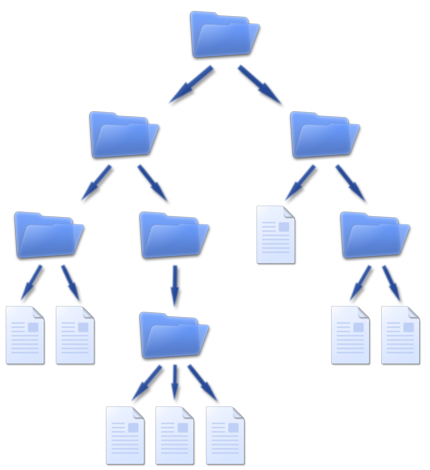

Un archivo o fichero es una secuencia de bytes almacenados en un dispositivo. Un archivo se identifica por un nombre y una ubicación dentro de un sistema de archivos (file system). Un sistema de archivos, por lo general tiene una forma jerárquica en forma de arbol para representar los archivos en los nodos "hoja" y las carpetas o directorios en los nodos intermedios.
Al igual que en otros lenguajes de programación, Python soporta nativamente operaciones sobre arhivos.
Las operaciones soportadas mas utilizadas son: abrir un archivo, cerrar, crear, escribir, añadir contenido, abrir archivo en modo binario..
Como podrá imaginarse, en Python es muy sencillo realizar todas estas operaciones. A continuación veremos varios ejemplos de como realizar las acciones mencionadas.
Uno de los archivos que soporta Python son los archivos de texto plano (sin formato). Imaginemos que tenemos el archivo curso_ate.txt en la misma carpeta donde corre nuestro programa.
Podemos abrir el archivo usando la función open() pasando como argumento el nombre de archivo que queremos abrir.
archivo = open('curso_ate.txt')
De esa manera tendremos en la variable archivo el contenido del archivo. De esta forma cargamos un archivo que está en almacenamiento a la memoria RAM para poder trabajar sobre él.
En el ejemplo anterior, vimos la función open() enviando como argumento de la función solo el nombre del archivo.
Si no se especifica algún otro argumento que no sea el nombre del archivo, se abrirá el archivo en modo lectura. Pero existe un segundo argumento es es importante especificar que representa el el modo de apertura del archivo
'r': Por defecto. Leer un archivo.'w': Escribir un archivo.'x': Creación de un archivo. Si existe falla.'a': Añadir contenido a un archivo existente.'b': Abrir un archivo en modo binario.Por lo que, para abrir el archivo curso_ate.txt si especificamos el segundo argumento quedaría:
archivo = open('curso_ate.txt','r')
Si bien no hace falta especificar el modo 'r' se recomienda como buena práctica.
Mas info en la doc oficial.
read()Volviendo al ejemplo del archivo curso_ate.txt imaginemos que el archivo tiene el siguiente contenido:
Línea 1
Línea 2
Línea 3
Podemos leer el archivo e imprimirlo por pantalla:
archivo = open('curso_ate.txt','r')
print(archivo.read())
# Línea 1
# Línea 2
# Línea 3
readline()Es posible ir leyendo línea por línea un archivo. El método que se usa para realizar esto es readline(). Cada vez que se llama a la función readline() se lee una línea. Hasta que se llega al final del archivo en ese momento, la función no devolverá nada.
archivo = open('curso_ate.txt','r')
print(archivo.readline())
print(archivo.readline())
# Línea 1
# Línea 2
Otra forma de usar readline() es pasando como argumento un número que indicará la cantidad de caracteres a leer.
archivo = open('curso_ate.txt','r')
print(archivo.readline(1))
# L
readlines()Este método devuelve una lista donde cada elemento de la lista es una línea del archivo. De manera que podemos tratarlo como una lista común y corriente.
archivo = open('curso_ate.txt','r')
lista_lineas = archivo.readlines()
print(lista_lineas)
# ['Línea 1\n', 'Línea 2\n', 'Línea 3\n']
archivo = open('curso_ate.txt','r')
lista = archivo.readlines()
for l in lista:
print(l)
# Línea 1
# Línea 2
# Línea 3
Otra cosa que debemos hacer cuando trabajamos con archivos en Python es cerrar dichos archivos una vez que hemos trabajado con ellos.
Aunque Python los cierra automáticamente una vez finaliza el programa, es recomendable cerrarlos manualmente.
Por lo tanto, para cerrar los archivos alcanza simplemente con el método close()
archivo = open('curso_ate.txt','r')
# ... Trabajo con el archivo
archivo.close()
Existe otra forma de cerrar el archivo automáticamente cuando finalicemos el bloque de código. Esto es posible con la instrucción with()
with open('curso_ate.txt','r') as archivo:
# Trabajar con 'archivo'
# El archivo ya está cerrado.
with open('curso_ate.txt', 'r') as archivo:
linea = archivo.readline()
while linea != '':
print(linea, end='')
linea = fichero.readline()
Se usa el end='' para que no imprima el salto de línea.
with open('curso_ate.txt', 'r') as archivo:
for linea in archivo.readlines():
print(linea, end='')
Versión resumida:
with open('ejemplo.txt', 'r') as fichero:
for linea in fichero:
print(linea, end='')
# Línea 1
# Línea 2
# Línea 3
En todos los casos dará el mismo output
En la sección anterior vimos como abrir archivos y leerlos línea por línea. Es posible también escribir en archivos. A modo de repaso, veremos el método open() con argumentos orientados a la modificación de archivos:
'w': Borra el archivo si ya existiese y crea uno nuevo con el nombre indicado.'x': Creación de un archivo. Si ya existe el archivo se devuelve un error..'a': Añadirá el contenido al final del archivo si ya existiese (append end Inglés).
archivo = open("datos.txt", 'w')
De esa forma creamos un archivo con el nombre datos.txt. Si queremos agregar datos lo abrimos con la opción "append".
archivo = open("datos.txt", 'a')
write()Ya hemos visto como crear un archivo, ahora veremos como agregar contenido al mismo.
archivo = open("datos.txt", 'w')
archivo.write("Agregamos una línea")
archivo.close()
Es muy importante cerrar el archivo cuando estamos en modo escritura.
Copiemos y peguemos el ejemplo citado. ¿Puede correr el programa y ver si se crea el archivo con el contenido indicado? ¿Así de fácil se agrega una línea?
write() (cont)Si quisieramos guardar una lista de elementos en un archivo. ¿Cómo procedemos?
# Abrimos el archivo como escritura
archivo = open("datos.txt", 'w')
# Tenemos unos datos que queremos guardar
jugadores = ["Messi", "J. Alvarez", "Dybala"]
# Guardamos la lista en el fichero
for linea in jugadores:
archivo.write(linea + "\n")
# Cerramos el fichero
archivo.close()
Es importante agregar el salto de línea "\n" ya que por defecto no la agrega.
writelines()Podemos enviarle una lista al método writelines() y el mismo se encargará de guardar cada elemento en el archivo.
archivo = open("datos.txt", 'w')
jugadores = ["Messi", "J. Alvarez", "Dybala"]
archivo.writelines(jugadores)
archivo.close()
# Se guarda
# MessiJ. AlvarezDybala
Se guarda todo junto sin espacios en cada elemento. Quizás no es lo que deseamos. Podemos solucionarlo agregando un salto de línea en cada elemento de la lista.
Podemos hacer una iteración recorriendo la lista agregando el salto de línea en cada elemento o guardarlo con el salto de línea.
withPodemos simplificar el código con la instrucción with(). Con dicho método no será necesario cerrar el archivo una vez que lo hayamos utilizado. El archivo se cerrará cuando finalice el bloque with.
jugadores = ["Messi\n", "J. Alvarez\n", "Dybala\n"]
with open("datos.txt", 'w') as archivo:
archivo.writelines(jugadores)
Messi
J. Alvarez
Dybala
Realizaremos dos funciones, una para leer un archivo y otra para escribirlo.
def escribe_archivo(mensaje):
with open('file.txt', 'w') as archivo:
archivo.write(mensaje)
def lee_archivo():
mensaje = ""
with open('file.txt', 'r') as archivo:
mensaje = archivo.read()
# Borra el contenido del fichero para dejarlo vacío
f = open('file.txt', 'w')
f.close()
return mensaje
escribe_archivo("Mensaje para el curso")
print(lee_fichero())
Python (como muchos otros lenguajes) contiene tipos y funciones incorporadas (Built-in Functions) que siempre estarán disponibles para usarlas sin necesidad de acudir a import.
Puede consultar en la Documentación de Python para tener un listado completo.
Algunas ya las hemos usado en clase por lo que le pueden resultar familiar.
Una buena práctica cuando se escribe un módulo es definir que es lo que hace y como se usa. Se usa la notación de comentarios con triple comillas dobles.
"""Breve descripción del módulo
Puede contener instrucciones de como se usa
"""
def suma(a, b):
""" Retorna la suma de dos operandos enviados por parámetro
"""
return a + b
if (__name__ == '__main__'):
print(f"La suma es {suma(3,99)}") # Código "suelto"
Ingrese al intérprete de Python escribiendo python en su consola. Una vez que tenga el prompt escriba help(sum)
¿Qué ha pasado?
Copie y pegue el contenido de modulo_clase.py y grabelo en su computadora en una carpeta. Luego abra un intérprete de Python dentro de esa carpeta y escriba lo siguiente:
import modulo_clase.py
help(modulo_clase)
¿Qué ha pasado?
Cree su propio módulo llamado matematica que contenga 4 funciones una para suma, resta, multiplicación y división respectivamente. Cada función debe retornar el resultado de la operación.
Luego escriba en otro archivo un programa que importe el módulo y solicite al usuario dos números y ejecute cada función informando el resultado por pantalla.
No olvide de realizar la documentación del módulo.
C:\curso\python\modulos para una ruta absoluta en Windows o ..\python\modulos para una ruta relativa./home/usuario/python/modulos para un path absoluto y ./python/modulos para una ruta relativa.
ThinkPython 2nd edition
(Downey-Elkner-Meyers)